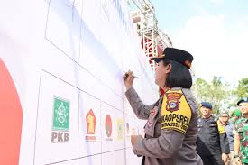
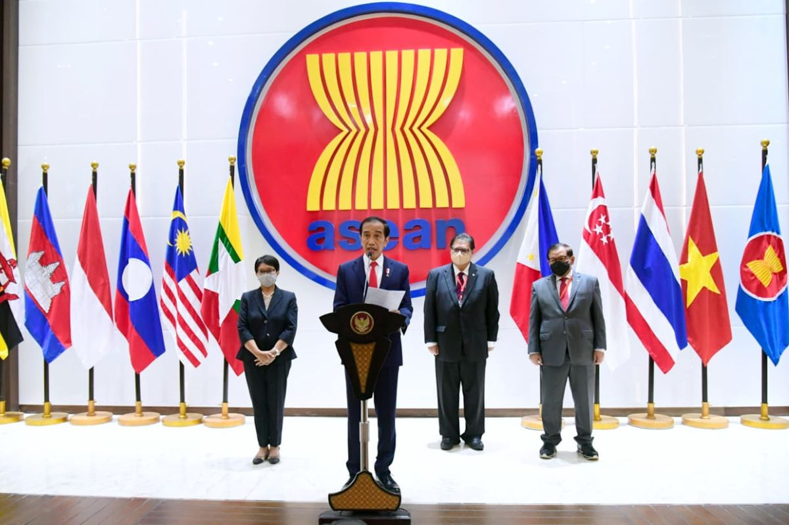

Calon legislatif berlomba menyampaikan visi dan misi di tengah ramainya pemilih muda.
Anggota DPR menggelar debat hangat terkait usulan Rancangan Undang-Undang yang akan membentuk masa depan bangsa.

pertemuan penting berlangsung untuk meningkatkan kerjasama di bidang ekonomi dan keamanan regional.
komentar dari pakar politik mengenai perubahan lanskap demokrasi yang di picu oleh teknologi dan media sosial>